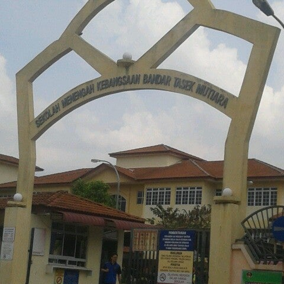

The Sungai Bakap Kebangsaan School, often known as SK Sungai Bakap, is a kebangsaan school located in Sungai Bakap. In 2010, Sekolah Kebangsaan Sungai Bakap had 406 female students and 286 male students, making the total number of students 692. It possesses 64 teachers. I was a student there from 2010-2016, did my upsr and graduated before going to my high school, SMK Bandar Tasek Mutiara.

My High School...
Starting on January 1, 2005, SMK Bandar Tasek Mutiara accepted students from Tingkatan 1, 2, and 4. At that time, Puan Zarina binti Zakaria was the Penolong Kanan Pentadbiran. She was assisted by Pn Samsiah binti Omar as the Penolong Kanan Hal Ehwal Murid and En. Mohd Rizal bin Ismail as the Penolong Kanan Kokurikulum. The school's student body is composed of 216 students, 4 supporting staffs, and 18 teachers. I was a student here since 2017-2022. In form 4, I took the vocasional stream, taking Food Processing as my elective subject. I finish SPM in 2022, graduated high school and got my UPU results which was the offer that brought me to UITM Kedah.
My University...(click on the photo!!!)
On October 1, 1997, YB Tun Daim Zainuddin, the Finance Minister, presided over the opening of UiTM Kedah. With 25 administrative staff members and 162 students, it opened for business in November 1997. A total of 162 students were enlisted in apprenticeship programmes, which included the Diploma in Banking, the Diploma in Public Administration, the Diploma in Accounting, and the Diploma in Business Studies. The university serves as a catalyst in the development of the economic and educational prospects of the locals, particularly in the state of Kedah and the northern area, in line with the government's goal and aim to enhance the abilities of Bumiputera in many disciplines. I'm currently a sem 4 student in the Library Informatics course. I got the offer from UPU, and there are 5 semesters in total for this diploma. For my future plans, I'd like to attend IIUM with English Linguistics as my degree, please pray for me!!!